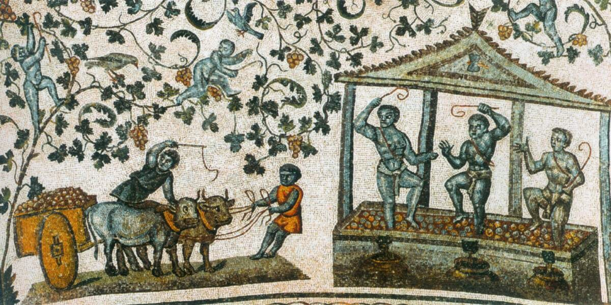
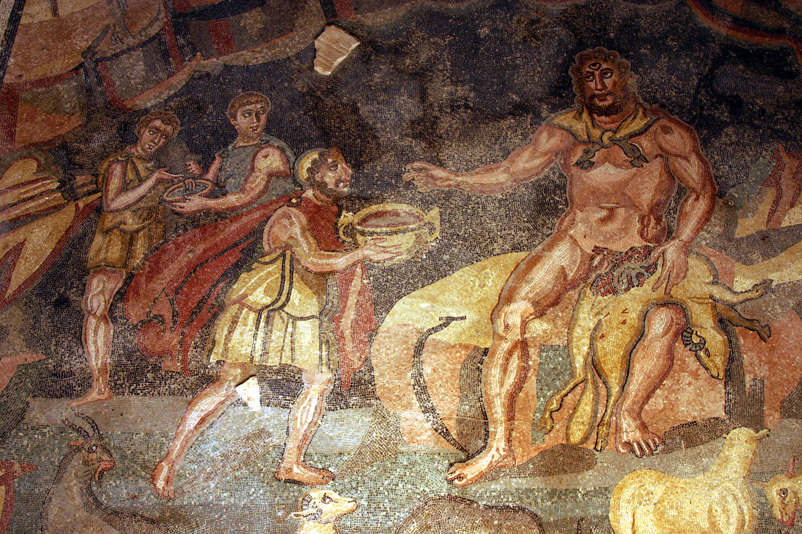
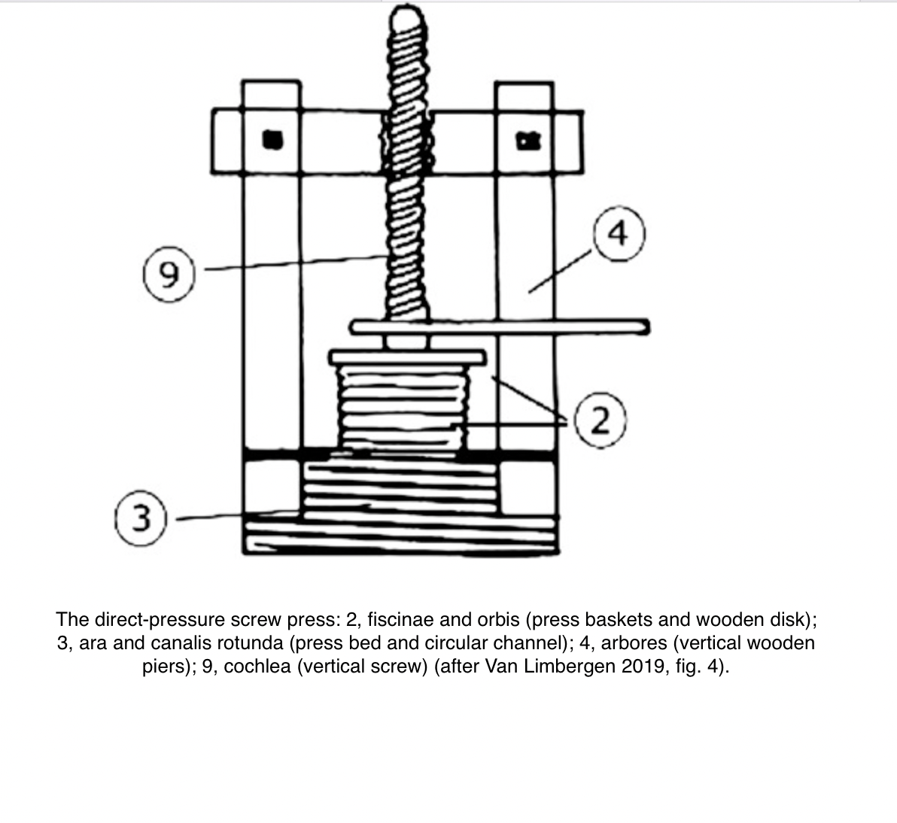

Wine production was one of the most important agricultural processes in Roman Italy. In Late Antiquity (300-600 CE), the process of wine production included harvesting grapes, initial crushing by treading, subsequent pressing of the pulp, and finally transferring the grape juice to the storage area for fermentation.
Archaeological Findings
At the "Augustus Villa" in Somma Vesuviana, three vats used for wine production were found. In San Giusto, Apulia, two wineries with screw presses were discovered. These archaeological findings confirm the continuation of large-scale wine production in Late Antiquity.
Images

Constantia's Sarcophagus depicting grape treading. Workers are shown stomping grapes on a raised floor, with juice flowing directly into sunken dolia without any indication of a press or intermediate vat. This depiction is significant as it resonates with Christian spiritual doctrine by symbolizing the transformation of the "first fruit" into wine.

Piazza Armerina Mosaic showing stages of wine production. The mosaic depicts a worker bringing baskets of grapes to the press room, three workers treading the grapes, and a press beam equipped with two vertical logs as support and round planks for pressing a pulp. This imagery is essential for understanding the wine production techniques of the time.

San Giusto Winery with screw presses. This unique winery, dated to the fourth century, contained two wine presses mounted on circular, tile-flagged platforms. Pipes under the press platform diverted the liquid from it to a large collecting tank located in an adjacent wine cellar, indicating advanced wine production technology of the period.
Audio
Overview of the wine production process in Italy in Late Antiquity.
Historical sources on wine production.
Archaeological findings related to wine production.
Artistic depictions and symbolism of wine production.
Bibliography
Burton P., Lewit T. Pliny’s Presses: The True Story of the First Century Wine Press. Klio 101, 2019.
Dodd E. The Archaeology of Wine Production in Roman and Pre-Roman Italy. American Journal of Archaeology 126 (3), 2022. P. 443–480. DOI: 10.1086/719697.
Filocamo A. Circolazione monetale e produzionedi vino. Aspetti dell'economia del Bruzio in età tardoantica. Rivista italiana di numismatica e scienze affini 107, 2006. P. 81-111.
Lewit T. Oil and Wine Press Technology in its Economic Context: Screw Presses, the Rural Economy and Trade in Late Antiquity. Antiquité Tardive 20, 2012.
Pecci A., Cau Ontiveros M.Á., Garnier N. Identifying Wine and Oil Production: Analysis of Residues from Roman and Late Antique Plastered Vats. JAS 40, 2013. P. 4491–498.
Rossiter J. Wine-Making after Pliny: Viticulture and Farming Technology in Late Antique Italy. In Lavan, L., Zanini, E., & Sarantis, A. (Eds.). Technology in Transition: A.D. 300–650. Late Antique Archaeology 4. Boston: Brill, 2008. P. 93-118.